东城探秘 |“龙脉”上的钟鼓楼
来源：北京东城
钟鼓楼一带自古就是
北京最繁华的地区之一
如今也是“老北京”的象征之一
散发着北京城最浓重的悠悠古韵
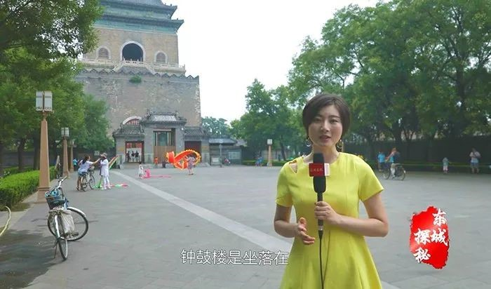据说元朝的时候
鼓楼这里称为“十字街”
建大都那年才盖了钟、鼓二楼
“暮鼓晨钟”象征着国泰民安
钟鼓楼从1272年开始
一直在用声音告知“北京时间”
往复652年

1924年
清朝最后一个皇帝溥仪离开紫禁城后
钟鼓楼便不再报时
关于钟楼的钟还有一段凄美的传说
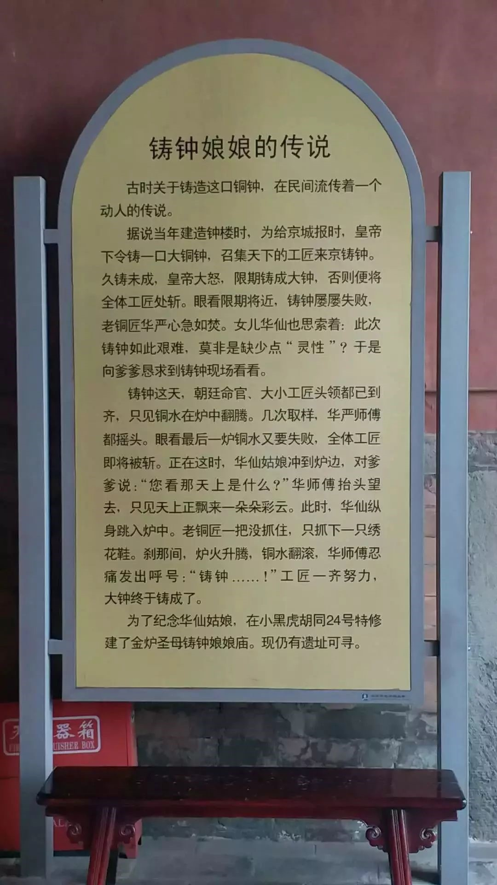 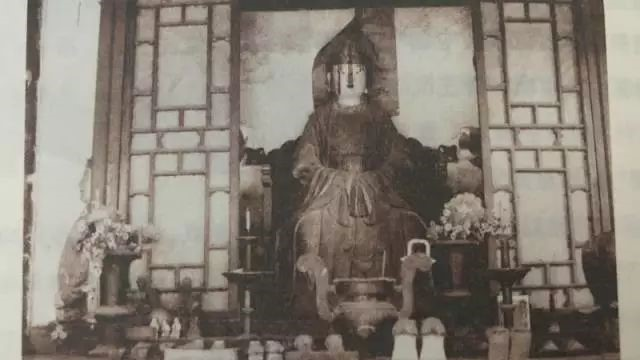 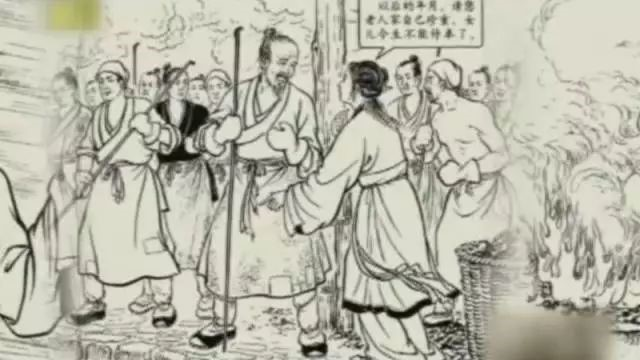如今我们看到的钟楼
是清乾隆十年（1745年）重建的
这口号称“钟王”的铜钟
是明朝永乐年间铸造的
是目前现存体量最大
分量最重的古代铜钟
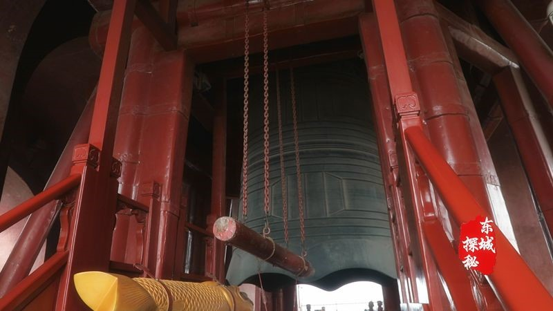钟楼作为报时中心
每天晚上19点“定更”关城门
早上5点“亮更”开城门
夜里两个小时一更次
击鼓和敲钟方法相同
紧十八，慢十八，不紧不慢又十八
如此两遍，共108下
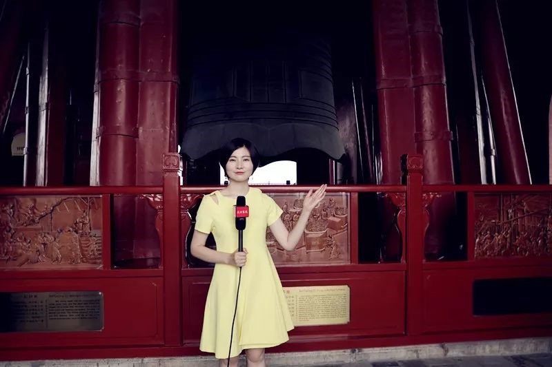为什么是108下？
因为古人用108这个数字代表一年
一年有12个月，24节气，72候
（古人把五天称为一候
六候为一月，一年七十二候）
这些数字相加正好是108
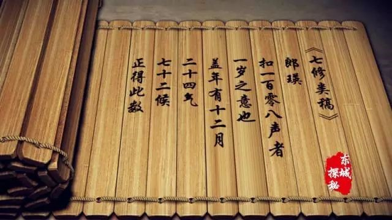钟体撞击时声音浑厚绵长
当时乾隆皇帝对此
曾有过非常生动形象的描述
“都城内外，十有余里，莫不耸听”
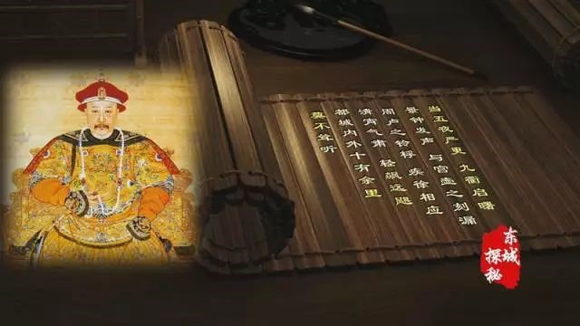1990年除夕
恢复了沉睡66年的钟声
成为北京城祈福的象征
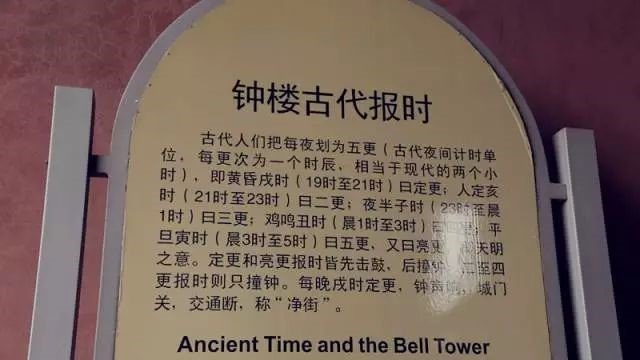钟楼原来与鼓楼类似为砖木结构
建成不久即遭雷击焚毁
清乾隆十年（1745年）重建
两年后落成
重建后钟楼全部改为砖石结构
一方面可以起到防火作用
另一方面在结构设计上
采用了声学的原理
由上下相通的两个共鸣腔组成
使钟声传播得更远
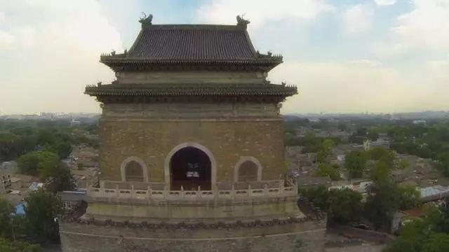现如今这里还是凭栏远眺的好去处
在这里驻足远望
目光所及之处
都是青砖灰瓦的胡同和四合院
一排排瓦顶如排浪一样涌向天空
真有一种历史在眼前凝固的感觉
再加上空中偶尔盘旋的鸽子群
可以说这里是体验北京之美的
绝佳好去处
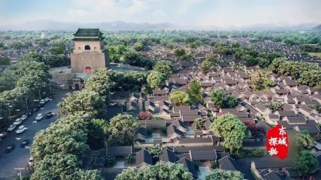与钟楼遥相呼应的就是朱红色的鼓楼
在鼓楼上向南望
正对面便是皇家园林景山
鼓楼往西南看去
什刹海近在眼底
远望可见北海琼华岛和中南海的瀛台
早年间
鼓楼周边一座座青瓦灰砖的四合院
连成一条条老北京胡同
石头铺成的街面透着悠远的历史印记
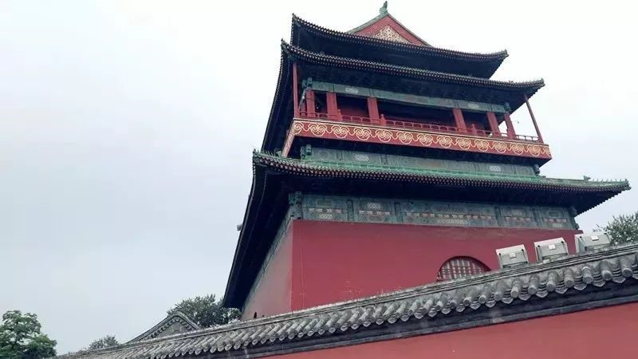鼓楼初名“齐政楼”
民国十三年也就是1924年
在鼓楼上举办了
八国联军侵华罪行图片展
故将鼓楼改为“明耻楼”
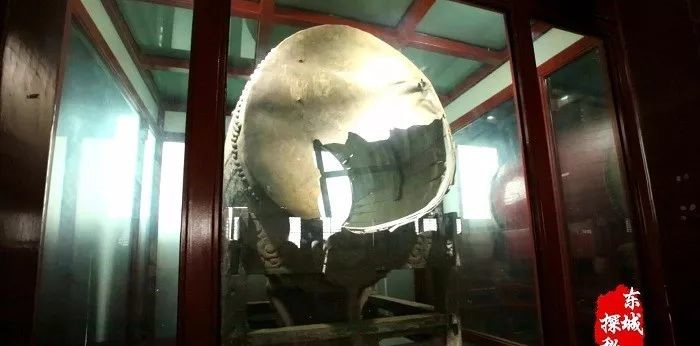这面破损的大鼓
成为那段历史的见证者
现如今已被保护了起来
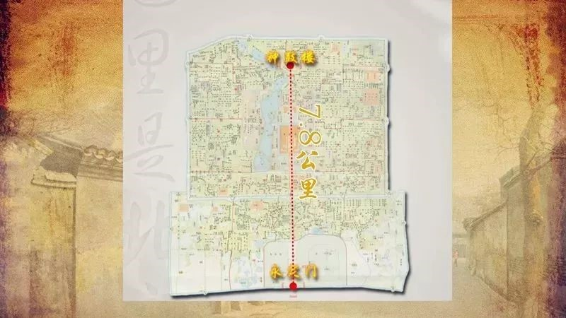左祖右社，前朝后市
这后市指的就是钟鼓楼一带
过去，在钟楼前、鼓楼后
有个当时京城无人不晓的“平民市场”
以小吃、杂耍为多
唱大鼓的、摔跤的
变戏法的、买膏药的
还有拉洋片的
表演艺术家侯宝林
就是在这开始学艺的
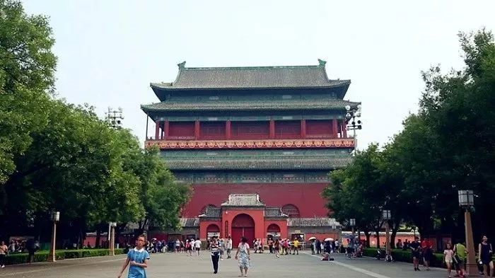为了更好地保护钟楼鼓楼
这两处国家级文物保护单位
提升钟鼓楼周边的历史风貌
东城区政府于2012年至2014年
启动了对钟鼓楼周边房屋的征收
并对整个环境进行了整治提升
提升的效果怎么样？
听听百姓怎么说——
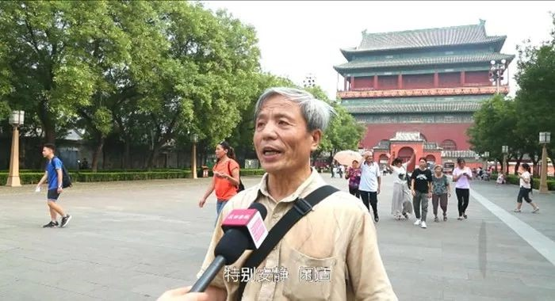 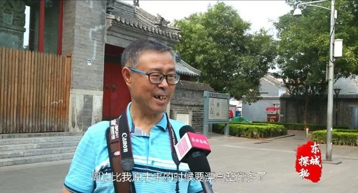作为北京中轴线上的一组古建筑
钟鼓楼壮美收尾
美国《时代》周刊曾把这里评选为
“消失前最值得一看的地方”
这里还是众多老北京人记忆中
最具生活气息的地方